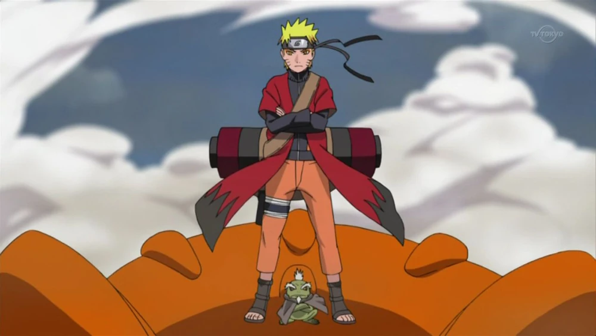
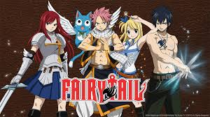

One Piece (ひとつなぎの大秘宝ワンピース Wan Pīsu?) es un manga escrito y dibujado por Eiichiro Oda, que ilustra las aventuras de los protagonistas piratas, en concreto la tripulación pirata formada por Monkey D. Luffy, quienes están en la búsqueda de un tesoro llamado One Piece. Fue publicado por primera vez el 19 de julio de 1997 en la revista Shonen Jump.
Villanos terroríficamente malvados de los rincones más oscuros del espacio y el tiempo se enfrentan con la Tierra, y Goku, el guerrero más fuerte del planeta, es todo lo que se interpone entre la humanidad y la extinción. Acompañado en la batalla por los valientes Guerreros Z, Goku viaja a reinos lejanos y peligrosos en busca de los poderes mágicos de las siete Dragon Balls... ¡y de una buena pelea!
Naruto Uzumaki es un niño marginado en la aldea ninja en la que vive. En su interior reside el poder de una bestia que estuvo al borde de destruir el pueblo años atrás, el Kyubi, el zorro de nueve colas, lo que hace que nadie quiera acercarse a él por considerarlo maldito. Pese a su soledad y su tristeza, Naruto quiere ser un ninja, pero no uno cualquiera: quiere ser Hokage, el líder de la aldea. En su camino, sus convicciones atraerán a muchos amigos y compañeros de viaje.
Lucy Heartfilia es una joven decidida a unirse al gremio de magos Fairy Tail. En su recorrido conocerá a Natsu, que es parte del gremio y que le ofrece entrar a formar parte de sus filas. Una historia de amistad, superación, combates mágicos, humor y muchos retos que superar, siempre con mucha acción de por medio.
En un mundo en el que la magia lo es todo, Asta y Yuno son dos niños que encuentran abandonados el mismo día en una iglesia. Mientras que Yuno crece demostrando tener unos grandes poderes mágicos, Asta parece ser la única persona en el mundo que no posee capacidad mágica alguna. Eso no importará a los dos jóvenes, que aspirarán a alcanzar el puesto de Rey Mago, el mejor mago de todos. Pero para ello tendrán que ser seleccionados primero por una Orden de Caballeros Mágicos, ¡y Asta no tiene magia!